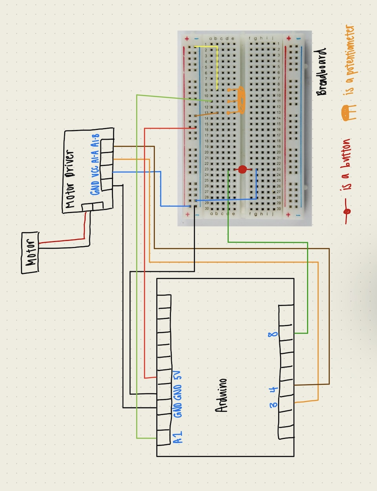

<h1 style= "text-align: center;">
Week 4: Microcontroller Programming </b></h1>
This week's assignment is to program an Arduino board to do something.
<h2 style= "text-align: center;">
Part 1: Programming the Board </b></h2>
This week, I decided to build off of my project from last week. I created two code programs for my board to see which one would work best. For the first one, I used a button and wrote code so that my butterfly wheel would spin one way and then once the button is pushed and held down, it would spin the other way. In order to get the butterflies to spin the other way, you have to be holding the button down.
<a href='./sketch_oct4a.ino' download> Here is my Arduino Button code!</a>
In my second round of coding, I attempted to use a potentiometer to control the speed of my butterflies. This attempt didn't work as well because the motor wasn't strong enough to move my gears unless it was at full speed. You can download my code below. I've attached both sets of codes as links to download since they're both pretty long and I didn't want to eat up my web page with pure code.
<a href='./week4.ino' download> Potentiometer Butterfly Code!</a>
<h2 style= "text-align: center;">
Part 2: Drawing the Circuit </b></h2>
For this part of the assignment, we were instructed to draw a schematic of our circuit. Here is mine!
<div class="image-container" style="margin-bottom: 20px; ; text-align: center;">

</div>
<h2 style= "text-align: center;">
Part 3: Videos of Button and Potentiometer in Action </b></h2>
<div class="video-container">
<video width="500" height="600" controls>
<source src="movie2.MOV" type="video/quicktime">
<source src="movie2.mp4" type="video/mp4">
</video>
<video width="500" height="600" controls>
<source src="movie1.MOV" type="video/quicktime">
<source src="movie1.mp4" type="video/mp4">
</video>
</div>